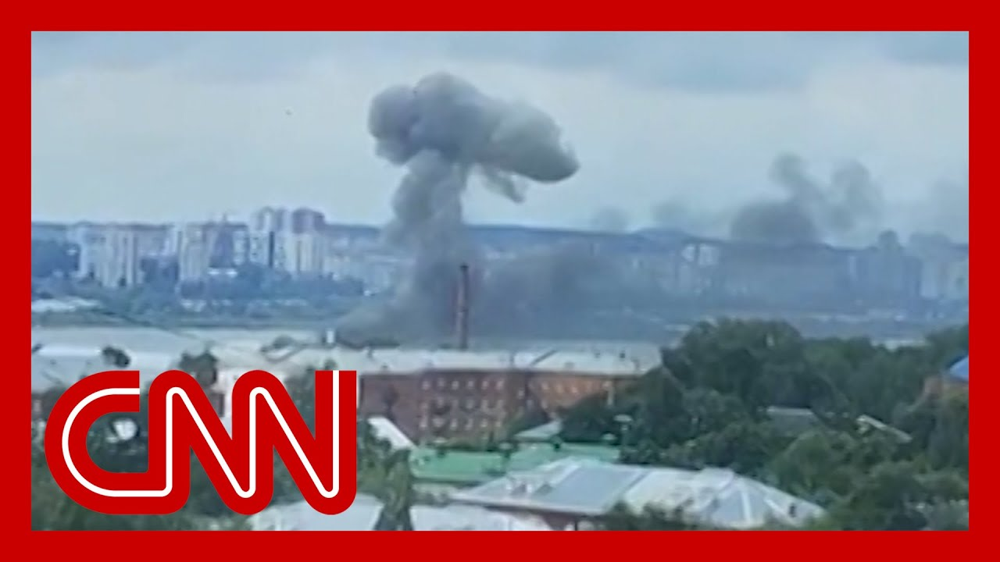

【CNN News 乌克兰袭击俄罗斯境内深处的导弹工厂】
Summary: CNN News 乌克兰袭击俄罗斯境内深处的导弹工厂
摘要： CNN News 乌克兰袭击俄罗斯境内深处的导弹工厂

⏱️ Estimated Reading Time: 15 min
📚 四级生词 📚 六级生词 📚 雅思生词 📚 托福生词 📚 专八生词 📚 SAT生词 📚 考研生词 📚 GRE生词 📚 高考生词
These are indeed extraordinary images of panic around a Russian arms plant.
这确实是俄罗斯军工厂周围恐慌的非凡画面。
You can hear, in fact, the gunfire of what is likely to be security personnel shooting up or what they think are drones about to hit the area around them.
事实上，你可以听到可能是安保人员开火的枪声，他们以为无人机即将袭击周围区域。
But also, it's extraordinary because of how deep inside Russia this was, 800 miles inside hitting what a Ukraine security official tells CNN was a target they were aiming at the coupole electromagnetic plant, which Ukraine says is responsible for the construction of tour missiles, OSAT and EMISAR systems.
但同样令人惊讶的是，这次袭击深入俄罗斯境内800英里，乌克兰安全官员告诉CNN，他们的目标是库波尔电磁工厂，乌克兰称该厂负责制造巡航导弹、OSAT和EMISAR系统。
And indeed, the Garapier attack drone used frequently across the front lines by Russian officials, though, say that three people were killed in this attack and 35 injured, unclear if they were civilians or people working at the factory plant itself.
事实上，俄罗斯官员称，经常在前线使用的“加拉斯”攻击无人机在此次袭击中造成3人死亡、35人受伤，尚不清楚他们是平民还是工厂工人。
But Ejevsp, where this attack occurred, so key to Russia's arm industry.
但袭击发生的叶夫斯克对俄罗斯军工产业至关重要。
But it comes at a time of bad news for Ukraine across the front lines.
然而，此时乌克兰在前线也面临不利消息。
And indeed, suggestions today from some Ukrainian military bloggers that, in fact, they've lost the largest amount of territory on the front lines in June for a number of months.
一些乌克兰军事博主今日指出，乌克兰6月在前线失去了数月来最大面积的领土。
As Russia continues its slow incremental advances, not quite the vast summer push that many had expected yet.
俄罗斯继续缓慢推进，尚未出现许多人预期的大规模夏季攻势。
But suggestions Russia is amassing over 100,000 troops near the strategic eastern town of Bukrovsk and possibly 50,000 near the northern Ukrainian city of Sumi.
但有迹象表明，俄罗斯正在战略要地东部布克罗夫斯克附近集结超过10万军队，并可能在乌克兰北部城市苏梅附近部署5万人。
Many deep concerns about what Russia's intentions may be in the weeks ahead.
外界对俄罗斯未来几周的意图深感担忧。
Even if Ukraine is increasingly showing how deep inside Russian territory it can penetrate with some accuracy.
尽管乌克兰正越来越多地展示其能精准打击俄罗斯境内纵深目标的能力。
Three people were reportedly killed and dozens more injured early Tuesday.
据报道，周二凌晨的袭击造成3人死亡、数十人受伤。
After Ukraine struck a missile production facility deep inside Russia.
此前乌克兰袭击了俄罗斯境内深处的导弹生产设施。
Russian officials say the missile hit the factory in the industrial city of Ifskysk, video from social media captured explosions and people running as you can see there from the blasts.
俄罗斯官员称导弹击中了工业城市伊夫斯克的一家工厂，社交媒体视频显示爆炸和人们奔跑的画面。
A Ukrainian source tells CNN that Ukraine used long-range drones to strike the plant.
乌克兰消息人士向CNN透露，乌克兰使用远程无人机袭击了该工厂。
And this comes after Ukrainian reports that Russia launched its largest-known drone attack on Kiev since this full-scale war started.
此前乌克兰报告称，俄罗斯发动了全面战争以来对基辅最大规模的无人机袭击。
I want to take you to Warsaw now and bring in Poland's foreign minister, Radiksik Korsky, for perspective, on the latest fighting between Ukraine and Russia.
现在请华沙的波兰外长拉迪克西克·科尔斯基就乌克兰与俄罗斯的最新战事发表看法。
And of course, much more foreign minister.
当然，外长还有很多要说的。
Good to have you back on the show.
欢迎回到节目。
Let me start with those strikes deep inside Russia because they come just a day or so after Kiev Kellogg, the U.S. senior envoy for Ukraine, said on X.
首先谈谈对俄罗斯境内的袭击，因为就在美国乌克兰问题高级特使基辅·凯洛格在X上发声后约一天发生。
I'm going to quote him here, Russia cannot continue to stall for time while it bombs civilian targets in Ukraine.
我引用他的话：“俄罗斯不能在轰炸乌克兰民用目标的同时继续拖延时间。”
Do you agree with that?
您同意吗？
And what pressure can U.S. Can Europe put on Putin to stop the stalling game?
美国和欧洲能对普京施加什么压力以阻止拖延战术？
I completely agree with General Kellogg.
我完全同意凯洛格将军的观点。
And in fact, this is the vein in which I spoke at the NATO summit last week in the presence of Secretary Rubio.
事实上，这正是我上周在北约峰会上当着鲁比奥部长的面所表达的立场。
Vladimir Putin is mocking the peace efforts of President Trump.
弗拉基米尔·普京正在嘲笑特朗普总统的和平努力。
He's increased his attacks on civilian targets in Ukraine since President Trump started his peace effort.
自特朗普总统启动和平努力以来，普京加强了对乌克兰民用目标的袭击。
And he's doubled them again since Israel's and the U.S. attack on Iran.
而在以色列和美国袭击伊朗后，他又将袭击翻倍。
So I hope the U.S. now does the right thing in response to Russian intransigence and war crimes.
因此我希望美国现在能对俄罗斯的顽固态度和战争罪行采取正确行动。
And I see this intransigence as and really moved at all because we're seeing Putin in the French President manual Macron.
我认为这种顽固态度毫无改变，因为我们看到普京在与法国总统马克龙通话。
We understand in the last what, half an hour or so, held a call with President Macron, the first call since September 2022.
据了解，约半小时前普京与马克龙总统通话，这是自2022年9月以来的首次通话。
And Putin told Macron that any agreement to end the war would quote, have to be based on new territorial realities.
普京告诉马克龙，任何结束战争的协议都必须基于“新的领土现实”。
That doesn't seem for a minister like we've moved at all when it comes to bringing forcing Putin to negotiating tables.
对外长而言，这似乎表明在迫使普京回到谈判桌方面毫无进展。
So what else would work here?
那么还有什么办法？
What else?
还有什么？
Well, I hope the Lindsey Graham bill gets attention in U.S. Congress because that would for the first time since the assumption of office by President Trump put some extra pressure on Putin.
我希望林赛·格雷厄姆的议案能在美国国会获得关注，因为这将是特朗普总统就职以来首次对普京施加额外压力。
He only responds to pressure.
他只会对压力作出回应。
Let me put to you what I heard you say and I thought it was really interesting.
我想转述您说过的一个有趣观点。
I heard you say, and I think this was at NATO, you can correct me, that the closer you are to Russia, the more you spend.
我记得您在北约说过——您可以纠正——离俄罗斯越近的国家国防开支越大。
I mean, that is certainly the case for Poland.
波兰显然就是如此。
You are the biggest spend as a percentage, I think, of GDP.
按GDP占比计算，波兰的国防开支应该是最大的。
But there are concerns for a minister, the Wall and agreement may have been signed here and agreed at NATO that there could be a slippage in the spending target of some countries.
但部长担心，尽管北约已签署协议，一些国家的国防开支目标可能出现滑坡。
We were looking at a graphic, some of the NATO spending as a share of GDP.
我们正在查看北约部分国家国防开支占GDP比例的图表。
Is this something that concerns Poland and what reassurances if any have you received on this front?
波兰是否对此担忧？在这方面获得了什么保证？
Well, first of all, remember that as not only U.S. NATO members, we have already doubled our defense spending since President Trump first assumed office.
首先请注意，不仅是美国，北约成员国自特朗普总统首次就职以来已将国防开支翻倍。
What we would, we have now pledged ourselves to do is to double again.
我们现在承诺要再次翻倍。
If we do that, we'll be at the same level of spending as the United States and that should be enough to put in, which is why we should do it.
若实现，我们将达到美国的开支水平，这足以形成威慑，因此我们应该这么做。
Are you okay, though, with Spain significantly lowering spending?
但您能接受西班牙大幅削减开支吗？
Because we did hear from the Spanish Prime Minister saying they're not going to meet the percentage they need to meet, Prime Minister Sanchez saying, you know, he, I think he said that during the NATO summit, they wouldn't go there.
因为西班牙首相桑切斯在北约峰会期间表示他们不会达到要求的比例。
They would spend 2.1% of a GDP on defense.
他们只会将GDP的2.1%用于国防。
Are you okay with that?
您能接受吗？
Okay, with that.
能接受吗？
Well, it's true that Spain has never been occupied by Russia, but Spain faces other risks.
确实西班牙从未被俄罗斯占领，但西班牙面临其他风险。
Russia is conducting a hybrid war against all of the West and that includes Assins, that includes Death Squads, that includes Espinage.
俄罗斯正在对西方发动混合战争，包括暗杀、敢死队和间谍活动。
It includes Medling in Africa, where Russia has used Africa's own resources to undermine governments and to create mass migration.
还包括干预非洲事务，俄罗斯利用非洲资源破坏政府并制造大规模移民。
And that's certainly something that Spain is concerned about.
这确实是西班牙所担忧的。
And speaking of threats, last week, Foreign Minister, you were quoted in the media saying that increased spending on NATO defense would lead to collapse of Russia.
谈到威胁，上周媒体引用您的话说，增加北约国防开支将导致俄罗斯崩溃。
Yesterday's Russia's Foreign Minister said NATO countries were responding to what he called an imaginary threat and the increased defense spending would lead to the collapse of NATO.
昨天俄罗斯外长称北约国家是在应对“虚构威胁”，增加国防开支将导致北约崩溃。
I mean, which side is spending too much on weaponry here?
那么哪一方在武器上花费过多？
Just your reaction to that.
请谈谈您的看法。
Well, first of all, the threat from Russia is not imaginary because we can see it every, every day, you know, sometimes when they bomb Ukraine, we in Poland can hear it.
首先，俄罗斯的威胁并非虚构，我们每天都能看到——有时俄罗斯轰炸乌克兰时，我们在波兰都能听到。
And we've already had Russian missiles and Russian drones breaching our space.
我们已有俄罗斯导弹和无人机侵入我国领空。
So for us, it's a daily reality and not a piece of imagination.
因此对我们而言这是日常现实而非想象。
And secondly, Russia is spending far more than NATO has pledged itself to do that, various estimates, but six, seven, eight percent of GDP Russia is spending.
其次，俄罗斯的国防开支远超北约承诺水平，估计达GDP的6%、7%甚至8%。
And of course, we have much richer than Russia.
当然，我们比俄罗斯富裕得多。
You know, our combined economy is more than 20 times bigger than Russia.
我们的经济总量是俄罗斯的20多倍。
So we can afford it.
因此我们负担得起。
And they are threading the path of the former Soviet Union.
而俄罗斯正重蹈苏联覆辙。
You know, the reason why my comment landed in Russia is that I was quoting Vladimir Putin himself who some years ago said that the Soviet Union bankrupted itself.
我的言论在俄罗斯引起反响，是因为我引用了普京多年前的话——他说苏联是自己拖垮了自己。
And he's now going down the same, the same sinkhole.
他现在正走向同样的深渊。
Let me stay with Poland for a moment because I understand your country for a minister is going to impose tempering controls on borders with Germany and Lithuania.
再谈谈波兰，据了解波兰将于7月7日起对德国和立陶宛边境实施临时管控。
I think it begins as of July 7.
应该是从7月7日开始。
We just explained to our viewers why Poland's doing this.
我们刚向观众解释了波兰此举的原因。
How long would it last?
会持续多久？
I know it's not the only country, but why now and how long would these temporary measures, temporary controls blast?
我知道不只波兰这么做，但为何是现在？这些临时管控会持续多久？
Well, Germany imposed controls in October 23 under the treaty in the EU, the governs that you can do it temporarily, but it's almost two years.
德国根据欧盟条约于2023年10月实施管控，理论上应是临时的，但已持续近两年。
And it's also tightened procedures recently.
德国最近还收紧了程序。
We have won our battle over the control of our border with Belarus.
我们已赢得与白俄罗斯边境的管控斗争。
Russia and Belarus on purpose.
俄罗斯和白俄罗斯故意从亚非地区带来移民。
They bring migrants from Asia, Africa and try to push them into the EU.
试图将他们推入欧盟。
We have spent over half a billion euros building a big and beautiful fence with sensors.
我们已花费超5亿欧元建造带传感器的高大围栏。
And it's 98 percent effective.
效果达98%。
But unfortunately, some of our neighbours, Lithuania and Latvia have not quite done it yet.
但遗憾的是，立陶宛和拉脱维亚等邻国尚未完全做到。
And so some migrants have been redirected that way, which is why that unfortunately we're having to introduce this measure.
因此部分移民被转向这些国家，我们不得不采取这一措施。
Poland is in favor of free movement across the territory of the EU, but everybody have to do their share.
波兰支持欧盟境内自由流动，但各国都需尽责。
But you have a sense for a minute of how long this temporary measure lasts.
但您是否对临时措施的持续时间有预估？
I know the Germany has lasted way more than was expected, but is there a time frame time limit here?
德国管控远超预期，波兰是否有时间框架？
That will depend on the flows of migrants.
这将取决于移民流动情况。
As I said, it stopped on the Polish-Bularussian border, despite the Belarusian regime's best efforts.
如我所说，尽管白俄罗斯政权竭力推动，波兰-白俄罗斯边境的移民流已停止。
So we need to take control, and we are doing it.
因此我们需要管控，我们正在行动。
And when we, when our people have a sense of security, then, and when we amend legislation, procedures in Europe, and regain the ability to decide who may or may not travel, then the controls will become superfluous.
当民众感到安全、欧洲修订立法程序、重获旅行审批权时，管控将变得多余。
Foreign Minister Redexy Korsky, thank you very much for a minister.
雷德克西·科尔斯基外长，非常感谢。
Great to have you back on the show.
很高兴您再次做客节目。
Pleasure.
荣幸之至。
Bye.
再见。
Thank you.
谢谢。